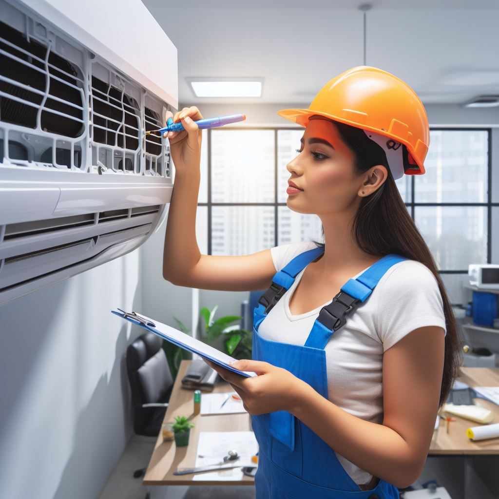

<ion-content class="ion-content-full-screen" style="background-color: white;">
  <ion-grid>
    <ion-row class="rectangulo">
      <ion-col size="1"></ion-col>
        <ion-col class="ion-text-start"  style="color: white;" >CLIMATIZA TU ESPACIO</ion-col>
        <ion-col class="ion-text-center" style="color: white;"><ion-icon name="call"></ion-icon>+569 00000000</ion-col>
        <ion-col class="ion-text-end"    style="color: white;"><ion-icon name="logo-instagram"></ion-icon></ion-col>
      <ion-col size="1"></ion-col>
    </ion-row>
    <ion-row class="rectangulo2">
      <ion-col size="1"></ion-col>
        <ion-col>
          <ion-button fill="clear">
            
          </ion-button>
        </ion-col>
      <ion-col size="1"></ion-col>
    </ion-row>
    <br><br><br><br><br><br><br><br><br>
    <ion-row class="rectangulo3">
      <ion-col size="1"></ion-col>
      <ion-col style="margin: 0;">
        <h1 style="font-weight: bold; font-size: 29px;" class="titulo">REPARACION</h1>
      </ion-col>
      <ion-row>
      </ion-row>
      <ion-col size="1"></ion-col>
    </ion-row>
    <ion-row>
      <ion-col size="1"></ion-col>
      <ion-col class="barra-uno"></ion-col>
      <ion-col size="1"></ion-col>
      <ion-col size="1"></ion-col>
      <ion-col size="1"></ion-col>
      <ion-col size="1"></ion-col>
      <ion-col size="1"></ion-col>
      <ion-col size="1"></ion-col>
      <ion-col size="1"></ion-col>
    </ion-row>
    <ion-row>
      <ion-col size="1"></ion-col>
      <ion-col style="color: #696B6D;text-align: justify;">
        <label>
          <br>
          En RVR Climatizacion E.I.R.L sabemos que reparar un aire acondicionado en lugar de
          comprar uno nuevo tiene múltiples ventajas. Algunas de ellas son:
          <br><br>
          <div style="font-weight: bold;">Extensión de la vida útil del equipo:</div> Reparar un aire acondicionado
          puede extender su vida útil y evitar la necesidad de comprar uno nuevo.
          <br><br>
          <div style="font-weight: bold;">Ahorro de dinero:</div> Reparar un aire acondicionado es generalmente más
          económico que comprar uno nuevo.
          <br><br>
          <div style="font-weight: bold;">Eliminación de malos olores:</div> La acumulación de polvo y bacterias en
          el interior del equipo puede generar malos olores. Reparar un aire
          acondicionado ayuda a eliminar estos olores y a mantener el aire fresco y limpio.
          <br><br>
          <div style="font-weight: bold;">Evita reparaciones de emergencia o la sustitución del equipo:</div> Reparar
           un aire acondicionado regularmente ayuda a detectar problemas antes
           de que se conviertan en fallas mayores, lo que puede ahorrarle dinero
           en reparaciones costosas o en la sustitución del equipo.
           <br><br>
           <div style="font-weight: bold;">Seguridad y salud:</div> Los aires acondicionados procesan todo el aire que
           respiramos. Reparar un aire acondicionado ayuda a evitar la acumulación
           de polvo, bacterias y hongos en el interior del equipo, lo que puede
           afectar la calidad del aire que respiramos.
           <br><br>
            En RVR Climatizacion E.I.R.L ofrecemos servicios de reparación de aire acondicionado de
            alta calidad. Nuestros técnicos altamente capacitados están disponibles para
            realizar reparaciones preventivas y correctivas en su equipo de aire acondicionado.
            Ofrecemos precios competitivos y un servicio excepcional.
            <br><br>
            ¡Contáctenos hoy para programar una cita!

        </label>
      </ion-col>
      <ion-col size="1">
      </ion-col>
      <ion-col>
        
      </ion-col>
      <ion-col size="1"></ion-col>
    </ion-row>
    <ion-row>
      <ion-col size="1"></ion-col>
      <ion-col>
        <ion-button (click)="scrollToSection('rectangulo4')" class="custom-button" expand="full" [routerLink]="['/home']">
          VOLVER A SERVICIOS
      </ion-button>

      </ion-col>
      <ion-col></ion-col>
      <ion-col></ion-col>
      <ion-col size="1"></ion-col>
    </ion-row>
    </ion-grid>
</ion-content>
